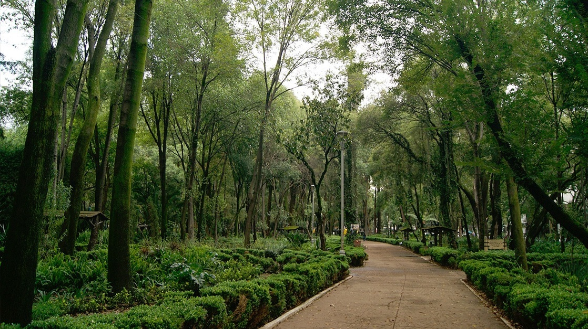
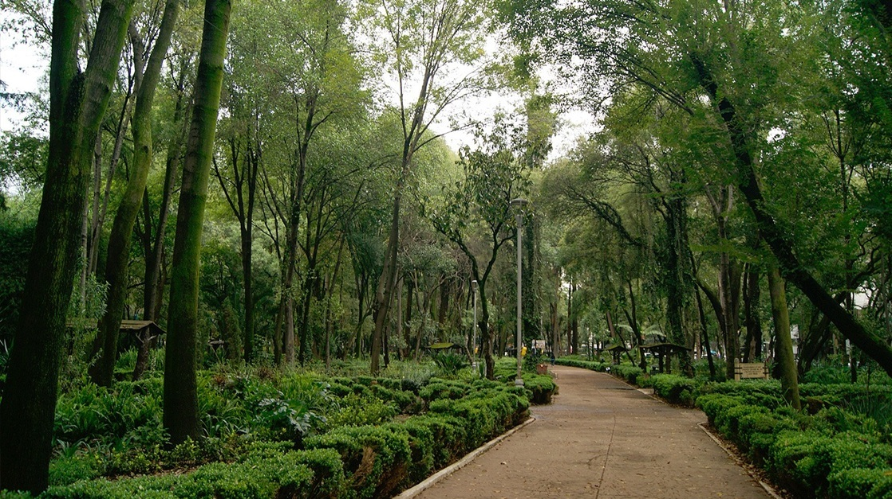
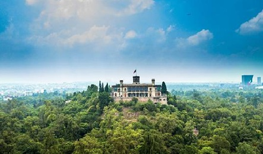
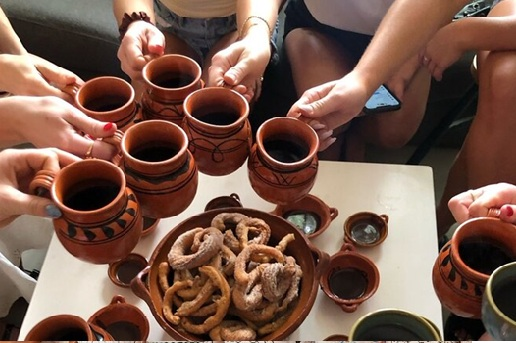
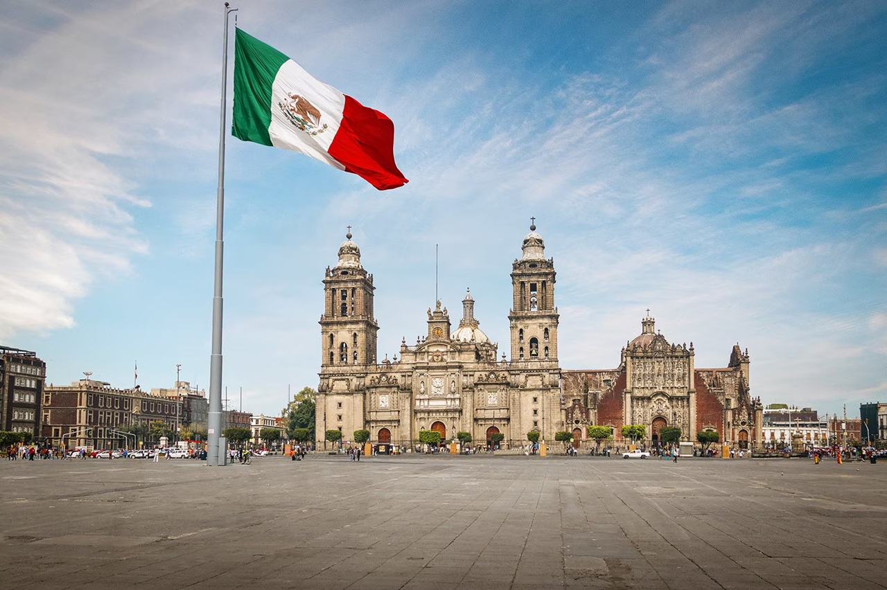
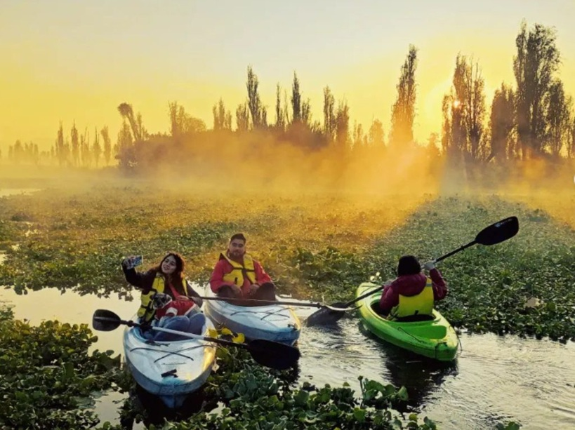
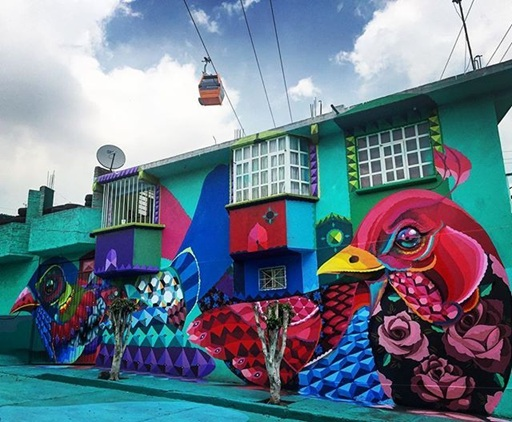
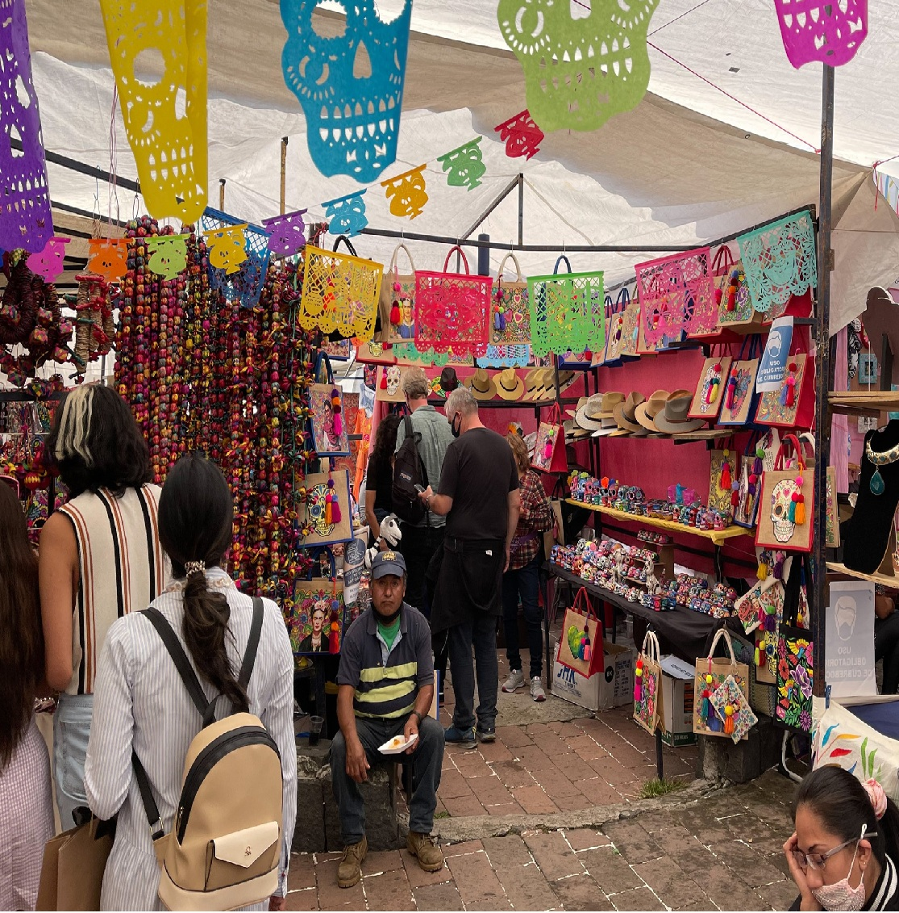
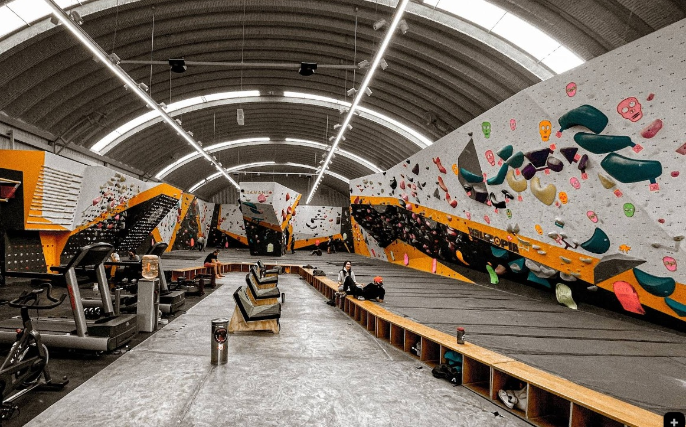
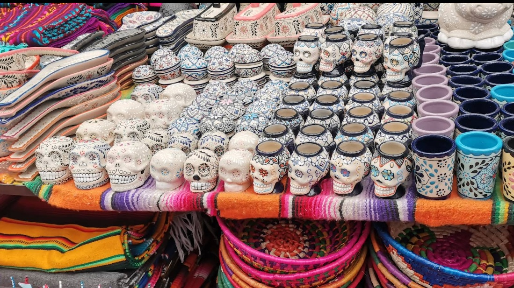

Morning / Early Afternoon: Arrival & Parque México
Arrive, unpack, and let the girls stretch their legs on leafy Parque México, with its two playgrounds and charming duck pond. A perfect, gentle start as all museums are closed today.
A Family Itinerary: Pyramids, Spooky Dolls, Tacos & Rock Climbing!
Arrive, unpack, and let the girls stretch their legs on leafy Parque México, with its two playgrounds and charming duck pond. A perfect, gentle start as all museums are closed today.
Embark on a self-guided food tour! Let Marie practice her Spanish ordering churros at El Moro and fruit paletas at La Michoacana before a casual fish-taco dinner at El Pescadito.
Explore one of the world's great museums. Focus on the breathtaking Aztec and Maya halls. Sorenne will love the giant, mysterious stone carvings!
Enjoy a picnic lunch on Chapultepec Lake, followed by a row-boat rental for Linnea and a walk through the vast Bosque de Chapultepec.
An early hotel pick-up for a breathtaking balloon flight over Teotihuacán at sunrise. After breakfast, walk the ancient Avenue of the Dead and tell Sorenne about the legends of the giant pyramids.
Experience the spectacle of a Lucha Libre family show at Arena México. Sorenne will love the spooky masks and heroic wrestlers!
Time to make everyone's favorite treat! Learn how to make authentic churros from a Mexican pastry chef. Marie can help mix the dough! You can find more details and book here: Churros Master Class.
After lunch, take a guided walk of the Zócalo and the Templo Mayor excavations. Tell Sorenne the spooky stories of the ancient Aztec temple that was discovered right in the middle of the city.
Visit the iconic Casa Azul where Frida Kahlo lived, then take a short taxi to the unique, pyramid-like Museo Diego Rivera-Anahuacalli.
Hire a colorful trajinera boat to float down the canals of Xochimilco. For Sorenne's love of spooky stories, ask the driver to take you past the eerie Island of the Dolls (Isla de las Muñecas)!
Head north to ride Mexicable Line 2. The whole family will love soaring above the colorful hillside murals. Hop off at La Cañada viewpoint for a playground break.
Browse the famous Bazaar Sábado arts-and-crafts market. A great chance for Marie to practice her Spanish with the friendly vendors while you shop for unique gifts.
Time for an adventure just for Linnea! Head to Adamanta Climbing Gym in Condesa for some awesome rock climbing and bouldering that she'll love.
After climbing, enjoy a delicious and creative vegan dinner at Veguisima, a local favorite in Condesa, to celebrate the day's adventure.
A quick run to Mercado de Artesanías La Ciudadela to find a special souvenir for each of the girls to remember their amazing trip.
Transfer to the airport, a`llowing at least 1.5 hours for the journey on a weekday morning. ¡Buen viaje!